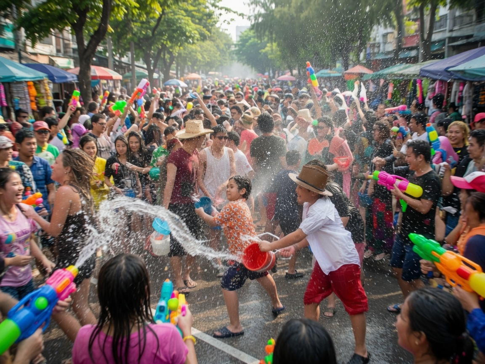
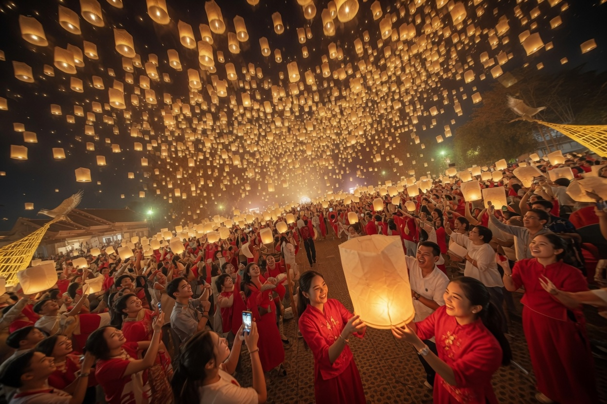
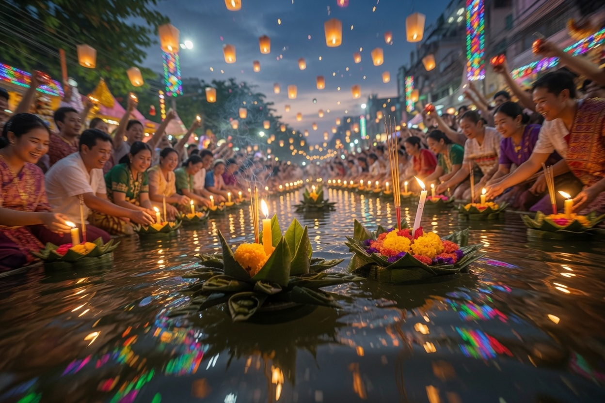
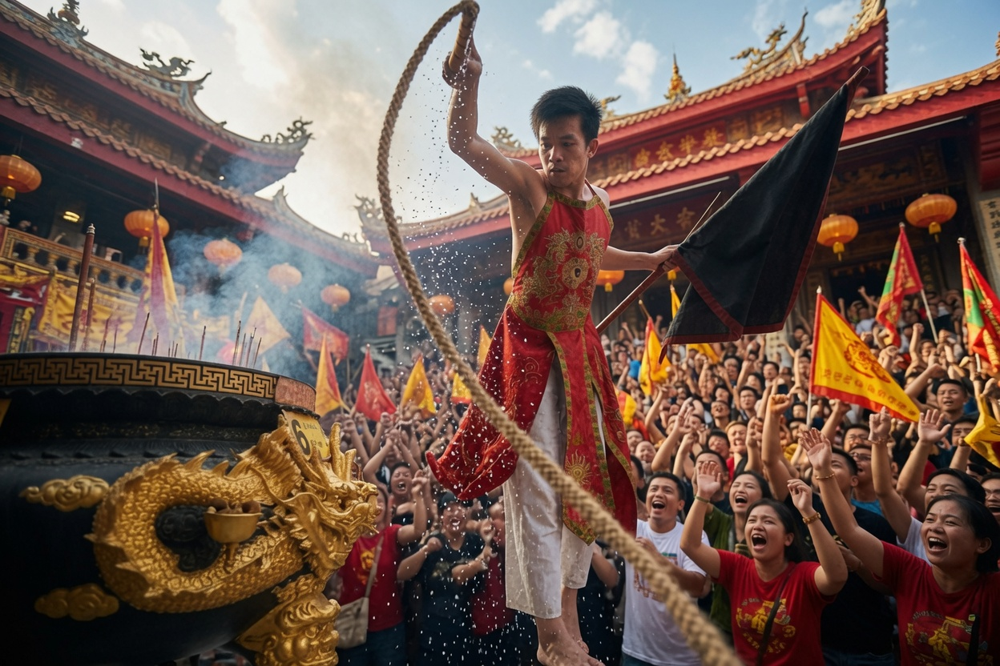
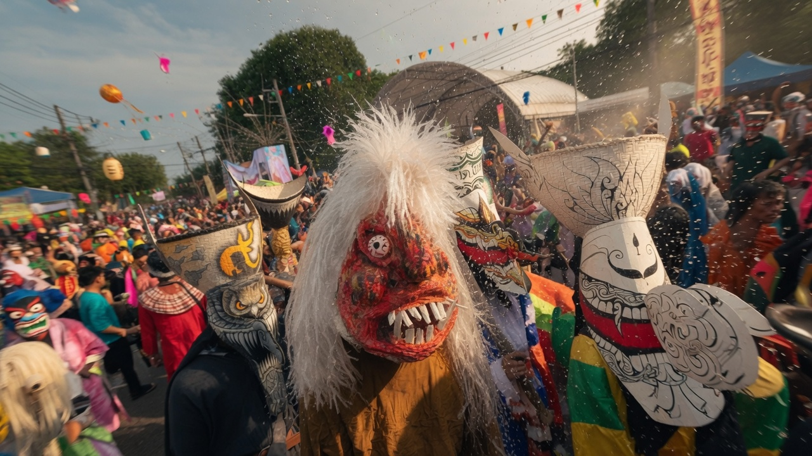
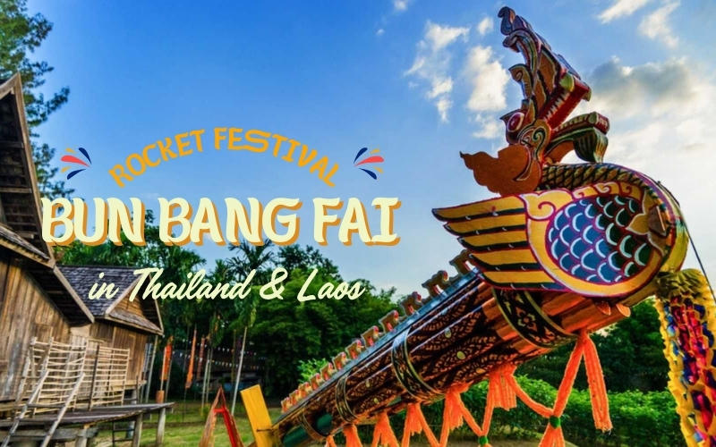
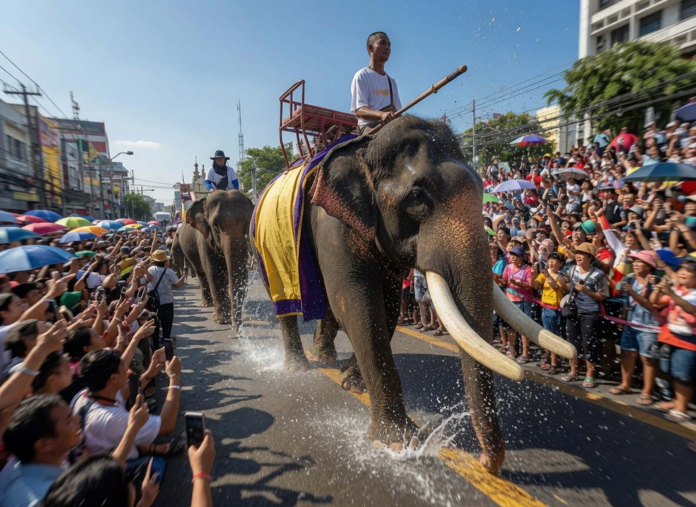
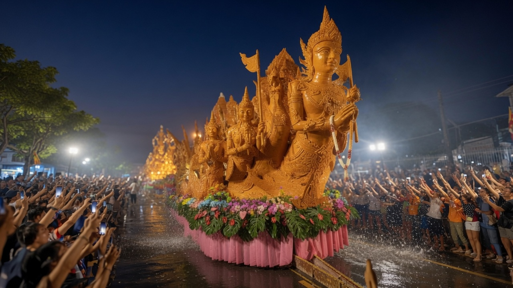
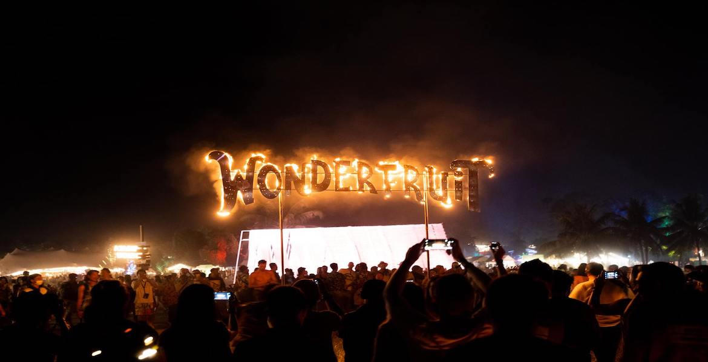
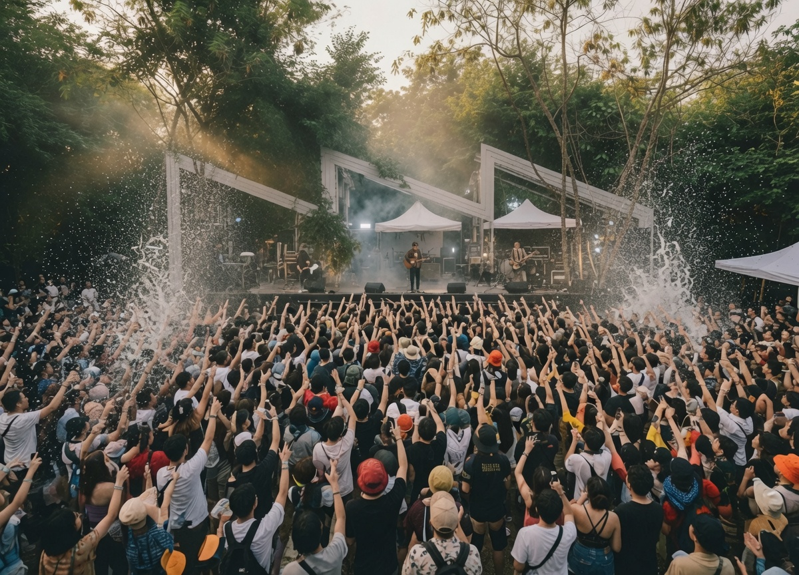

Culture & Festivals • Guide
12 Amazing Festivals & Holidays in Thailand
By Genext Information Systems Staff
Published 18 July 2026 • 14 min read • 2026 Festival Guide

From explosive water fights and floating lanterns to ghostly parades, giant carved candles and massive music festivals, Thailand is one of the world's most festive destinations. Its celebrations are living expressions of faith, community, history and pure joy — and whether you're seeking spiritual depth, visual spectacle or a world-class music experience, these twelve events offer something truly special.
Dates for lunar-based festivals can shift slightly each year, so always verify with official Tourism Authority of Thailand sources closer to your travel dates.
In this guide
- 1. Songkran Festival
- 2. Chiang Mai Flower Festival
- 3. Yi Peng Lantern Festival
- 4. Loy Krathong Festival
- 5. Phuket Vegetarian Festival
- 6. Phi Ta Khon Ghost Festival
- 7. Boon Bang Fai Rocket Festival
- 8. Surin Elephant Round-Up
- 9. Ubon Ratchathani Candle Festival
- 10. Wonderfruit Festival
- 11. Big Mountain Music Festival
- 12. S2O Songkran Music Festival
April 13–15 • Nationwide
1. Songkran Festival
Thailand's Legendary Water New Year

Songkran transforms Thailand into the world's largest, happiest water fight. For three days every April, streets across the country erupt in joyful chaos as people of all ages soak each other with buckets, water guns and hoses. What began as a gentle ritual of pouring scented water over Buddha images and elders' hands to wash away the previous year's misfortunes has evolved into a nationwide carnival of laughter and connection.
The most spectacular celebrations happen in Chiang Mai, where the ancient moat becomes a massive battlefield and the Old City pulses with energy. Bangkok's Khao San Road and Silom turn into wet and wild party zones, while beach destinations like Phuket and Pattaya add a tropical twist. Beyond the water, families visit temples, build sand pagodas and make merit — blending sacred tradition with pure fun.
What makes Songkran truly amazing is its universal appeal. Strangers become temporary allies in water battles, and the heat of the hot season is washed away in waves of laughter. It's a rare moment when Thailand's famous hospitality and “mai pen rai” (never mind) attitude reach peak levels.
Best for: Everyone — families, couples, solo travellers, party lovers
Pro tip: Wear quick-dry clothes, use a waterproof phone pouch, and respect “no face shots” etiquette in some areas.
Early February • Chiang Mai
2. Chiang Mai Flower Festival
A Riot of Blooms and Lanna Culture
When northern Thailand's cool season reaches its peak, Chiang Mai explodes in colour. The annual Flower Festival features massive parade floats completely covered in intricate floral mosaics, traditional Lanna costumes, marching bands and beauty pageants. The entire city seems to celebrate the beauty of flowers and the arrival of spring.
The highlight is the grand parade through the historic streets of Chiang Mai, with dozens of elaborately decorated floats depicting scenes from mythology, nature and Lanna heritage. Many are so detailed they look like living paintings. The festival also includes flower exhibitions at Suan Buak Hat park.
What makes it amazing is the sheer artistry and joyful civic pride. The floats represent months of work by communities and temples, and the combination of vibrant flowers, traditional music and elegant Lanna architecture creates scenes of rare beauty. It's one of the most visually stunning and family-friendly festivals in Thailand.
Best for: Families, photographers, garden lovers, visitors to Chiang Mai in February
Pro tip: Arrive early along the parade route, then visit the flower exhibition at the park afterward. Many hotels offer special packages.
Nov 24–25, 2026 • Chiang Mai
3. Yi Peng Lantern Festival
Thousands of Wishes Rising into the Night Sky

On the full-moon night of the Yi Peng festival, the skies above Chiang Mai fill with thousands upon thousands of glowing paper lanterns. Each one carries a wish, a prayer or a hope for the coming year. Watching them drift silently upward into the darkness is one of the most magical sights in all of Asia.
Rooted in the Lanna culture of northern Thailand, Yi Peng symbolises the release of negativity and the welcoming of good fortune. Dedicated events at venues like the CAD Cultural Center offer organised mass releases with fireworks, while smaller releases happen along the Ping River and on temple grounds.
What makes it amazing is the sheer scale and serenity. The lantern release feels peaceful and contemplative even with thousands of people present. It's romantic, photogenic and deeply moving — a collective act of hope that connects participants to something larger than themselves.
Best for: Couples, photographers, spiritual seekers, first-time visitors to the north
Pro tip: Book official venue tickets in advance. Bring a light jacket — nights can be cool — and respect safety rules around open flames.
Nov 25, 2026 • Nationwide • best in Sukhothai
4. Loy Krathong Festival
Floating Away Negativity on Rivers of Light

Loy Krathong is poetry in motion. On the night of the full moon in the 12th lunar month, Thais gather by rivers, canals and lakes to float small, beautifully crafted krathongs — lotus-shaped boats made from banana leaves, flowers, incense and candles. As they drift away carrying grudges and negative thoughts, the water becomes a shimmering mirror of flickering lights.
The most atmospheric celebrations happen at Sukhothai Historical Park, where ancient ruins are illuminated and a spectacular light-and-sound show tells the story of the festival. In Chiang Mai, the Ping River glows while Yi Peng lanterns rise overhead. Ayutthaya and Bangkok's waterways also host memorable events.
What makes Loy Krathong amazing is its gentle beauty and profound meaning. It's a moment of reflection and release, and the combination of craftsmanship, visual spectacle and spiritual intention creates something genuinely moving.
Best for: Couples, photographers, culture lovers, peaceful yet spectacular experiences
Pro tip: Make your own krathong at a temple or market. Sukhothai offers the most magical setting with its historic ruins.
Oct 10–18, 2026 • Phuket Old Town
5. Phuket Vegetarian Festival
Nine Days of Extreme Devotion and Spiritual Power

For nine days in October, Phuket Old Town transforms into one of the most intense and visually arresting spiritual spectacles on Earth. Devotees of the Nine Emperor Gods dress in white, follow a strict vegetarian diet and many enter trance states to perform extraordinary acts of self-mortification — piercing their bodies, walking on hot coals and carrying heavy shrines.
The festival originated in the 19th century, when Chinese opera performers fell ill and were said to have recovered after adopting vegetarianism and rituals honouring the Nine Emperor Gods. Today it remains a powerful expression of faith for Phuket's large Chinese-Thai community.
What makes it amazing is the raw display of faith and the blurring of physical and spiritual boundaries. The contrast between serene vegetarian food stalls and dramatic processions creates a fascinating tension. It's not for the faint of heart, but for those open to it, it's profoundly moving and unlike anything else in Thailand.
Best for: Cultural explorers, photographers, those interested in Chinese-Thai traditions
Pro tip: Dress modestly (white if participating), be respectful during trances, and try the amazing vegetarian street food.
June 20–22, 2026 • Dan Sai, Loei Province
6. Phi Ta Khon Ghost Festival
Thailand's Most Colourful and Playful Ghost Parade

In the remote north-eastern town of Dan Sai, Loei province, villagers transform into ghosts — but the friendliest, most colourful ghosts you'll ever meet. During Phi Ta Khon, locals don elaborate hand-carved masks with long noses and exaggerated features, then parade through the streets accompanied by thundering drums, music and dancing.
The festival has deep Buddhist roots and commemorates a legend in which villagers celebrated so enthusiastically upon the Buddha's return that they woke the dead. Today it's a joyful folk tradition combining merit-making, masked processions and a contest for the most beautiful “ghost.”
What makes Phi Ta Khon amazing is its pure, unpretentious fun — a village carnival crossed with Halloween and Mardi Gras. The energy is infectious. It's one of Thailand's most authentic and least commercialised major festivals, offering a rare glimpse into Isan culture and humour.
Best for: Adventure travellers, culture enthusiasts, photographers, quirky local traditions
Pro tip: Stay in Dan Sai — the town fills up fast. Join the parade if invited, and the masks make incredible souvenirs.
May (~8–10, 2026) • Yasothon, Isan
7. Boon Bang Fai Rocket Festival
Explosive Homemade Rockets and Rain-Making Revelry

In the agricultural heartland of Isan, villagers build enormous homemade rockets from bamboo and gunpowder, decorate them like works of art, then launch them skyward in a thunderous bid to persuade the heavens to send rain for the rice fields. The Boon Bang Fai is equal parts agricultural ritual, engineering competition and all-out party.
The biggest celebrations happen in Yasothon province, featuring parades of beauty queens on floats, traditional music, dancing and rocket launches that can reach impressive heights. The rockets range from small playful ones to massive multi-stage creations.
What makes it amazing is the combination of ancient belief and community creativity. The atmosphere is electric — part county fair, part extreme-sports event, part rain dance. It's a wonderful window into rural Thai life and the deep connection between people, land and weather.
Best for: Adventure seekers, photographers, rural Thai culture and explosive fun
Pro tip: Stand at a safe distance during launches. Yasothon has the biggest organised event — combine it with nearby Khmer ruins.
Nov 19–21, 2026 • Surin, Isan
8. Surin Elephant Round-Up
Hundreds of Elephants in a Spectacular Cultural Showcase

In Surin province, home to many of Thailand's ethnic Kuy mahouts, hundreds of elephants gather for one of the country's most impressive animal festivals. The Surin Elephant Round-Up features grand parades through the streets, demonstrations of traditional elephant skills, cultural performances and a chance to see these magnificent creatures celebrated as part of living heritage.
The event takes place at Si Narong Stadium and the surrounding area. Elephants are decorated with colourful cloth and ornaments, and you'll see them in processions, historical reenactments and displays of strength and intelligence.
What makes it amazing is the sheer number of elephants in one place and the genuine cultural context. It's a powerful visual spectacle and a chance to appreciate the animals' role in Thai history. Many visitors find it deeply moving to see so many gentle giants together in a celebratory setting.
Best for: Animal lovers, families, photographers, cultural-history enthusiasts
Pro tip: Book tickets for the main stadium shows in advance. Respect ethical guidelines — observe rather than ride unless it's part of a verified programme.
July / early August • Ubon Ratchathani
9. Ubon Ratchathani Candle Festival
Giant Carved Wax Candles in a Spectacular Night Parade

Every year around the start of Buddhist Lent, Ubon Ratchathani hosts one of Thailand's most visually spectacular events. Local communities and temples spend months carving enormous wax candles — some several metres tall — into incredibly detailed scenes from Buddhist mythology, history and imagination. These glowing masterpieces are then paraded through the streets at night on lavishly decorated floats.
The festival coincides with Asalha Bucha and Khao Phansa. The main highlight is the grand procession of the giant carved candles, accompanied by traditional music, dancers in colourful costumes and thousands of spectators. Smaller temples also create beautiful candles for local ceremonies.
What makes the Ubon Candle Festival amazing is the extraordinary level of craftsmanship and devotion on display. These are not simple candles — they are monumental works of art that take teams of sculptors weeks or months to complete. The sight of these glowing giants moving slowly through the night streets is unforgettable: a perfect blend of artistry, spirituality and community pride.
Best for: Art lovers, photographers, spiritual travellers, those visiting Isan in summer
Pro tip: The main parade is at night — arrive early for a good spot. Many temples welcome visitors to watch the candle-carving in the days before.
December 2026 • Pattaya / Chonburi
10. Wonderfruit Festival
Thailand's Premier Arts & Music Experience

Wonderfruit is widely regarded as Thailand's most sophisticated and immersive music-and-arts festival. Set across a beautiful natural site near Pattaya, it combines world-class electronic and live music with stunning art installations, wellness activities, talks and a strong focus on sustainability and creativity. It's not just a party — it's a multi-day cultural experience.
The festival features multiple stages with international and Thai artists, incredible lighting and production, and a diverse crowd that includes families, artists and music lovers. Past line-ups have paired major global acts with rising Thai talent. The atmosphere is magical, especially at night with the signature flaming “Wonderfruit” sign lighting up the sky.
What makes Wonderfruit special is the balance of high-quality music, breathtaking production and thoughtful curation. It feels like a premium international festival while staying rooted in Thai creativity and nature. If you want a sophisticated yet high-energy music experience in Thailand, this is the one.
Best for: Music lovers, arts enthusiasts, couples, those wanting a premium festival experience
Pro tip: Book early — tickets and on-site accommodation sell out fast. Bring comfortable shoes for the large site; it's great by day and night.
December 2026 • Thailand (various locations)
11. Big Mountain Music Festival
Thailand's Biggest Outdoor Music Celebration

Big Mountain Music Festival is one of Thailand's largest and most beloved outdoor music events, bringing together tens of thousands of fans for a massive celebration of Thai and international music across multiple stages in a beautiful outdoor setting. The energy is electric from the moment the first act hits the stage.
The festival showcases a wide range of genres — from Thai rock and pop to hip-hop, electronic and international headliners. Past editions have featured some of the biggest names in Thai music alongside global acts. The production is huge, with impressive lighting, sound and visuals that make it feel like a world-class event.
What makes Big Mountain a true highlight is the sheer scale and the connection between artists and the Thai crowd. The atmosphere is pure joy and high energy. If you want to experience Thai music culture at its biggest and most passionate, this is the festival to hit.
Best for: Thai music fans, high-energy festival-goers, groups of friends, first-time festival visitors
Pro tip: Arrive early for good spots near the main stage. Plan your day around must-see acts, and look into camping or nearby accommodation.
April 2026 (during Songkran) • Bangkok
12. S2O Songkran Music Festival
The World's Wettest EDM Party
S2O Songkran Music Festival is the ultimate fusion of Thailand's Songkran water festival and world-class EDM. Held annually in Bangkok during Songkran, it features massive water cannons, giant water jets and some of the biggest names in electronic music. It is, quite literally, one of the wettest and wildest music festivals on the planet.
The production is on another level — enormous stages, intense lighting and non-stop water effects that soak the entire crowd. International superstar DJs headline alongside Thai talent, and the energy runs from afternoon until late night, the water turning it into one giant, joyful water fight combined with a world-class rave.
What makes S2O such a standout is the pure, unfiltered fun and spectacle. It's Songkran on steroids — the water fights you love, but with world-class DJs, massive production and thousands of people losing their minds together. For the most epic, wet and high-energy music experience Thailand offers, this is it.
Best for: EDM lovers, party-goers, groups of friends, anyone who loves water fights and music
Pro tip: Wear clothes you don't mind getting soaked (or bring a change). Earplugs are recommended near the stage, and tickets sell out fast — book early.
Plan ahead, and let the celebrations surprise you
Thailand's festivals offer windows into the soul of the country — its spirituality, creativity, humour and warmth. Whether you chase water fights in Chiang Mai, release lanterns under a full moon, watch giant carved candles glow, or lose yourself in a massive music festival, you're taking part in something ancient and alive. Travel respectfully, verify the dates, and budget your trip with ThaiHolidayBudget. Sawasdee, and happy travels.